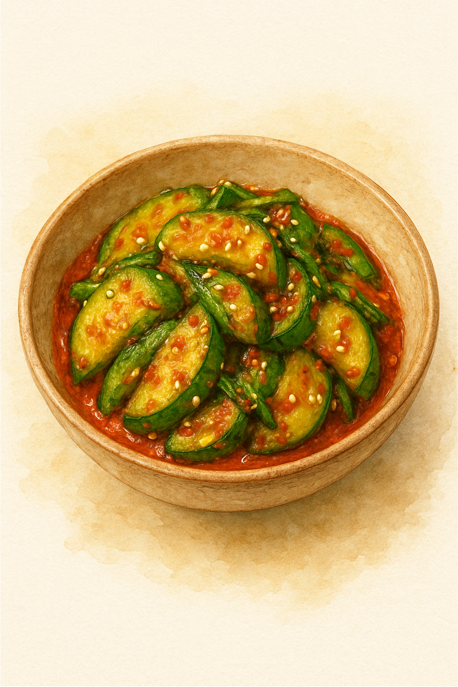

Spicy Korean Cucumber Salad

A refreshing spicy cucumber salad made with minimal ingredients
Ingredients
- 1 whole cucumber
- 1 teaspoon of salt
- 1 tsp mirin / rice vinegar
- 1 1/2 teaspoon of sugar
- 1 1/2 teaspoon gochugaru
- 1 tsp seasame oil
- 2 cloves of garlic, minced
- 1/4 of a small onion, minced
- 1 1/2 teaspoon of seasame seeds
Steps
- Cut the cucumber into thin slices
- Sprinkle salt on top and massage, let rest for 10 minutes
- Drain the salt water from the cucumber
- Mix all the ingredients with the cucumber and massage well
- Serve while cold
Home